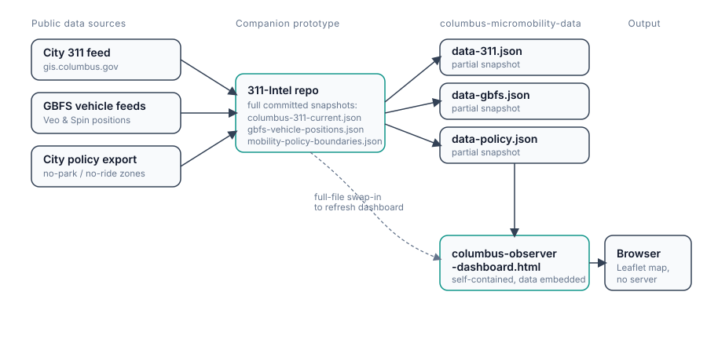

Editorial restraint
Use hierarchy, rhythm, and language before decoration. Avoid promotional cards, oversized claims, and generic infographic tropes.
Project design system · edition 1.0
Field Ledger is the independent editorial identity for Columbus Micromobility Data: a public-data-only observer project connecting 311 requests, published vehicle positions, and mobility-policy boundaries without overstating what those sources prove.
The parent practice contributes rigor, accessibility, and editorial restraint. Field Ledger turns those values into a more documentary, instrument-like identity built around field notes, system flows, and decision records.
Use hierarchy, rhythm, and language before decoration. Avoid promotional cards, oversized claims, and generic infographic tropes.
Separate observation, heuristic, and conclusion. A proximity cluster is a review signal—not proof of a violation, cause, or operational failure.
Terracotta marks decisions, exceptions, and interventions. River blue marks evidence, movement, and system flow. Color communicates state, not authorship.
Every figure names its source, capture time, extraction state, and known limitation. Partial snapshots must remain visibly partial.
Favor timeless type, real documentary photography, hairline rules, and generous space. The result should still feel credible in five years.
The project is not an operator, employer, or City tool. Its identity should communicate informed outside observation rather than institutional authority.
Warm paper is the project’s default canvas. Dark blue-green is reserved for map context and occasional evidence panels; river ink carries source links, while fired brick marks cautions and interpretation boundaries.
Most pages use ledger paper with #202A2E text. Night map is a supporting context, not the site-wide background. Signal brick and river ink are semantic accents, not decorative alternates.
Components sit directly on the surface and are separated with space and hairlines. Borders indicate structure, not containers. Shadows are absent on dark surfaces.
Four or more published vehicles appear within roughly 20 metres. Review signal only; not a confirmed pile-up or violation.
HeuristicA thin signal-brick rule and one decisive sentence are enough. Avoid banners, badges, and decorative icons.
Secondary surface
The warm paper surface supports case studies, research, diagrams, and long-form evidence. It may use one subtle framed embed, but should retain the same typography and quiet hierarchy as the dark shell.
Use the simplest form that answers the question. Label values directly, keep categories few, name the source, and state whether the graphic shows a complete feed, partial snapshot, heuristic, or illustration.
Horizontal bars are preferred for comparing a small number of categories. Avoid legends when labels can sit beside the data.
System graphics should show a single flow or relationship. Use short labels and explain dashed or inferred connections in the caption.

Prefer bars, dot plots, small timelines, and direct labels. Begin axes at zero when bar length represents magnitude. Avoid 3D, gauges, and ornamental charts.
Limit visible layers, use shape plus color, and keep the legend beside the graphic. Distinguish observed records from inferred or heuristic relationships.
Use real Columbus street and mobility documentation with plain captions: what, where, when, and why it matters. Avoid stock photography and dramatic grading.
Write like an operator explaining a system to another thoughtful person. Prefer concrete verbs, honest approximation, and practical consequences over claims about innovation or impact.
Analyzed roughly six months and 20,000+ rides to identify chronic underperforming vehicles and the neighborhoods driving demand.
Revolutionized fleet performance with a cutting-edge, data-driven solution that delivered unprecedented impact.
Title, then one dense sentence covering what, how, and consequence. Use numbers when they are defensible. Do not inflate certainty.
Sentence case for prose. Uppercase only for compact mono labels. No emoji, forced enthusiasm, fake urgency, or exclamation points.
Say “published position,” “311 request,” “proximity flag,” and “snapshot.” Do not convert public observations into claims about intent, fault, or compliance.
Keep the public-data-only and non-affiliation statement visible. Operator names identify published feeds; they do not imply partnership or endorsement.
A page is unfinished until it works with a keyboard, survives zoom, respects reduced motion, and keeps essential text above minimum contrast.
#5D696D or darker.prefers-reduced-motion.